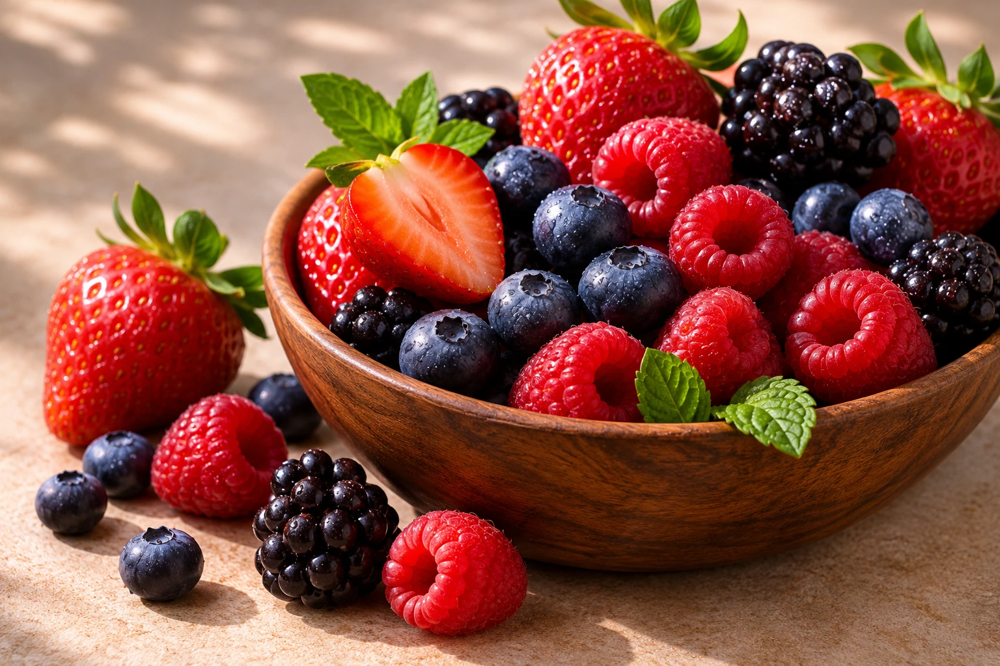

Fresh & Frozen Fruits
Mango, pineapple and other fruit selections for retail, foodservice and ingredient applications.
ProduceA growing selection of produce and pantry staples for retail, foodservice and international distribution.
Mango, pineapple and other fruit selections for retail, foodservice and ingredient applications.
Produce
Selected vegetables and mixes, including green peas and leafy produce, for everyday cooking and professional kitchens.
Produce
A colourful range of berries suited to smoothies, bakery, desserts and retail formats.
Produce
Dried food products and ingredients for buyers seeking convenient pantry and food manufacturing options.
Dried Foods
Selected tea for retail and wholesale markets. Product grades, formats and pack options are available on enquiry.
Tea & CoffeeRoasted and unroasted coffee options for retail, hospitality, roasters and distribution partners.
Tea & Coffee
Cocoa products for food preparation, ingredient supply and distribution. Available formats can be discussed on enquiry.
Ingredients
Fresh avocados selected for retail, foodservice and distribution markets, subject to seasonal availability.
Fresh Produce
Maize for food, retail and ingredient supply. Available forms and specifications can be discussed with our team.
Grains & Roots
Sweet potatoes for retail, foodservice and ingredient markets, with supply details available on enquiry.
Grains & Roots
Fresh cowpea leaves, a familiar African leafy vegetable for traditional dishes, retail markets and foodservice applications.
Leafy Produce
Selected natural honey for retail and foodservice buyers. Packaging and supply details available on enquiry.
Natural FoodsRetail, foodservice and distribution enquiries are welcome. Tell us the products, formats and markets you are sourcing for.
Make a Product Enquiry →A considered product range supports buyers across retail, foodservice and distribution.
Request Product Info →